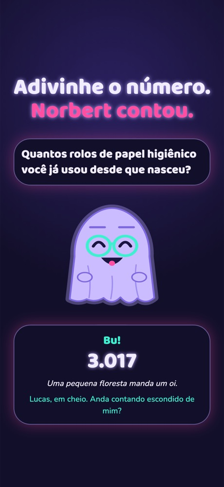
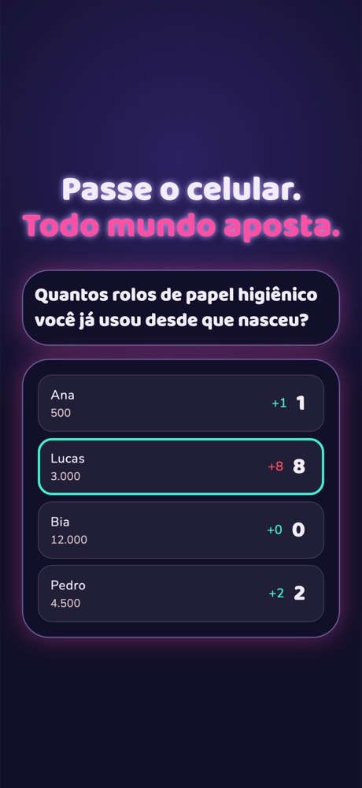
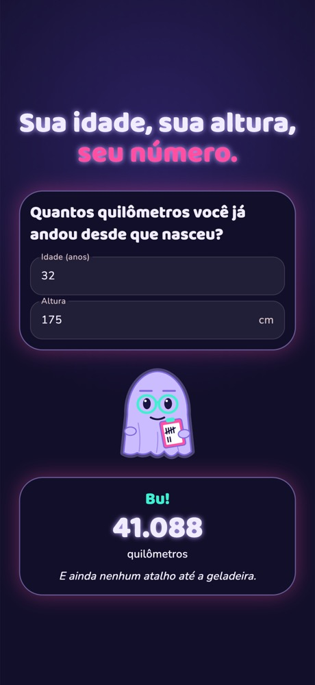
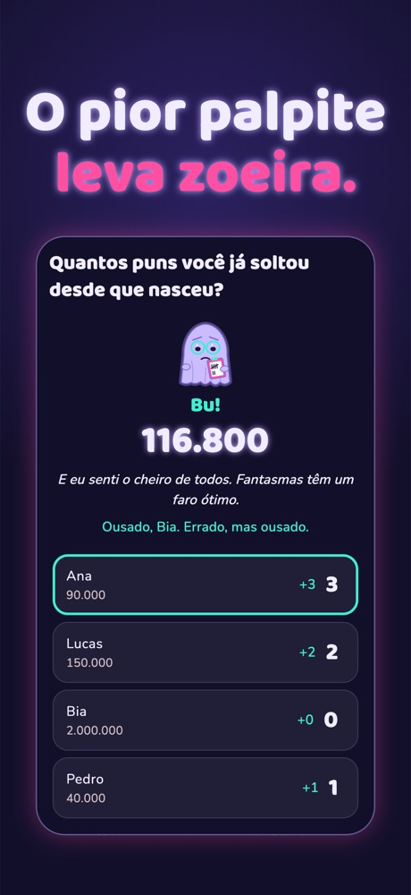
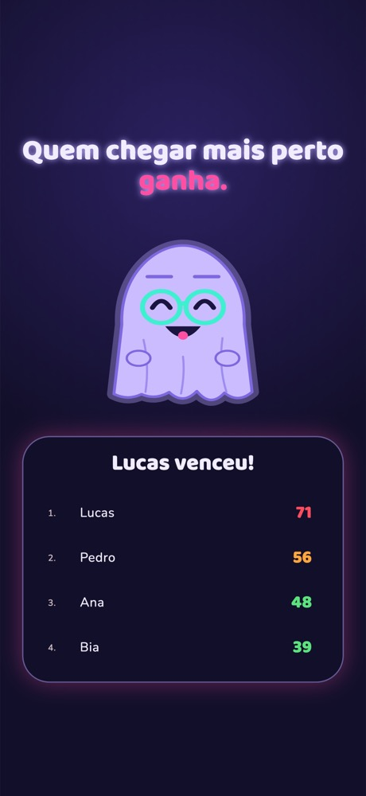
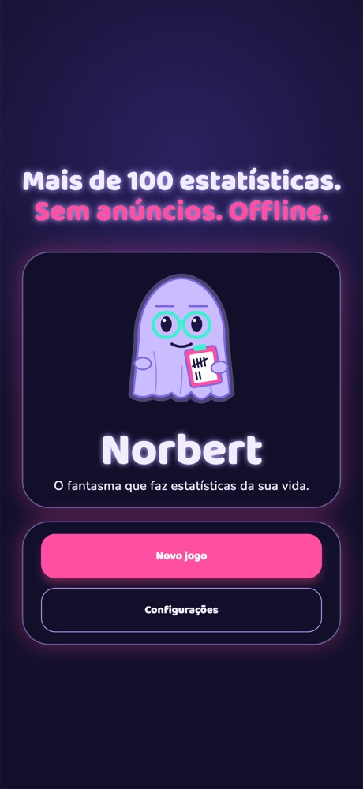

Norbert
O fantasma que faz estatísticas da sua vida.
Norbert é um fantasma nerd de óculos que te segue desde que você nasceu, de prancheta na mão. Ele contou tudo: os rolos de papel higiênico, os quilômetros andados, os litros de suor.
Passem o celular, deem alguns dados sobre vocês e apostem no número. Depois o Norbert revela a verdade e zoa quem chegou mais longe.
As estatísticas estão disponíveis em português, inglês, francês, italiano, alemão e espanhol.
Capturas de tela






COMO JOGAR
1. Conte ao Norbert
A estatística pede um ou dois dados, como sua idade ou seu peso, para que o resultado fale de você de verdade. Pessoal demais? Pule para outra.
2. Apostem
Cada jogador, na sua vez, digita seu palpite para o número, sem espiar os outros.
3. Bu!
O Norbert aparece com a resposta, uma comparação para dar a dimensão e uma alfinetada no pior palpite.
Pontuação
Você ganha 1 ponto para cada jogador que chutou mais longe que você. Chegue bem perto para ganhar um bônus:
Seu jogo, do seu jeito
De 2 a 8 jogadores em um só celular, 5, 10 ou 15 rodadas. Um jogo interrompido pode ser retomado depois.
101 estatísticas sobre você
Da sua vida inteira até o que seu corpo está fazendo agora: cabelo crescido, piscadas, batimentos, pizzas comidas… Números críveis, perguntas bobas.
Sem anúncios, sem rastreamento
Norbert é gratuito. Sem conta, sem anúncios, sem compras no app, sem rastreamento. O app funciona totalmente offline: o que você conta ao Norbert fica no seu celular.
Se você curte o que eu faço e quer me ajudar a continuar, um café já ajuda muito.
Me pague um caféCréditos
- Design e código
- Jeff · Two Pins Studio
- Feito com
- Flutter